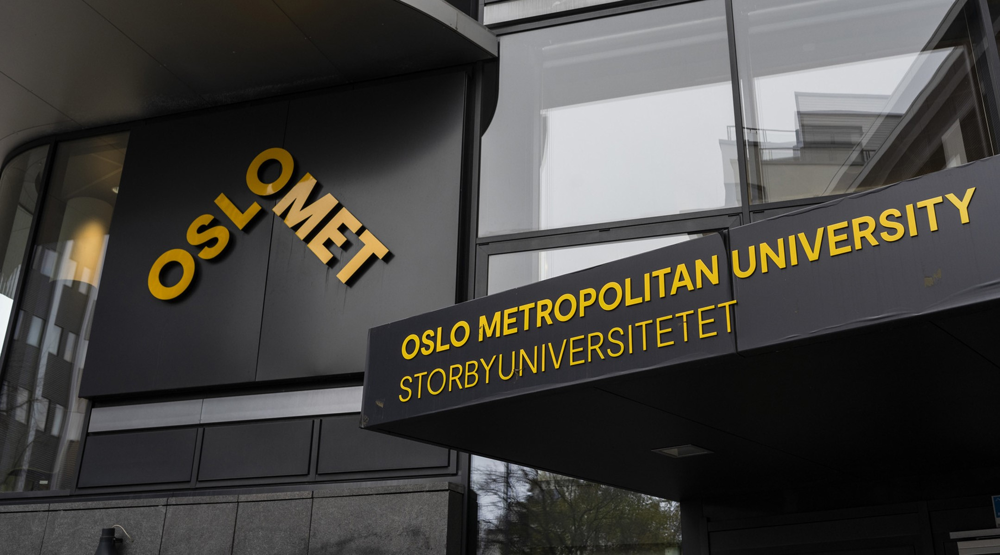
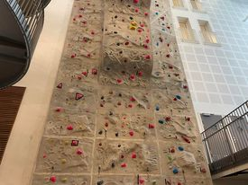

Fakulteter
Fakultetene på OsloMet representerer en bredde av fagfelt og gir en betydelig bidrag til kunnskapsutviklingen og samfunnsutviklingen i Norge og internasjonalt.
- Fakultet for teknologi, kunst og design
- Fakultet for helsevitenskap
- Fakultet for helsefag
- Fakultet for samfunnsfag
- Fakultet for lærerutdanning og internasjonale studier
Bli kjent med studentene

Lise forteller: På Pilestredet 35 har hver morgen startet med en kopp kaffe i kantinen, hvor jeg møter venner og lader opp til dagen. Deretter, i forelesninger og gruppediskusjonene, har jeg virkelig fått følelsen av å være en del av et engasjerende akademisk fellesskap. Og selvfølgelig, biblioteket - mitt andre hjem! Jeg har brukt mange timer der inne, fra sene kvelder til tidlige morgener, fordypet meg i bøker og artikler som har hjulpet meg med prosjekter og eksamener. Pilestredet 35 har vært så mye mer enn bare et sted for læring; det har vært en reise gjennom kunnskap og vennskap jeg aldri vil glemme.
Fasiliteter
Pilestredet 35 imponerer med et imponerende utvalg av fasiliteter som gir studenter en variert opplevelse. Fra den imponerende klatreveggen som gir mulighet for eventyr og fysisk utfordring, til det moderne treningsrommet som gir en sunn balanse mellom studier og trening, er det noe for enhver interesse. I tillegg tilbyr de velutstyrte grupperommene et ideelt sted for samarbeid og produktive studieøkter.